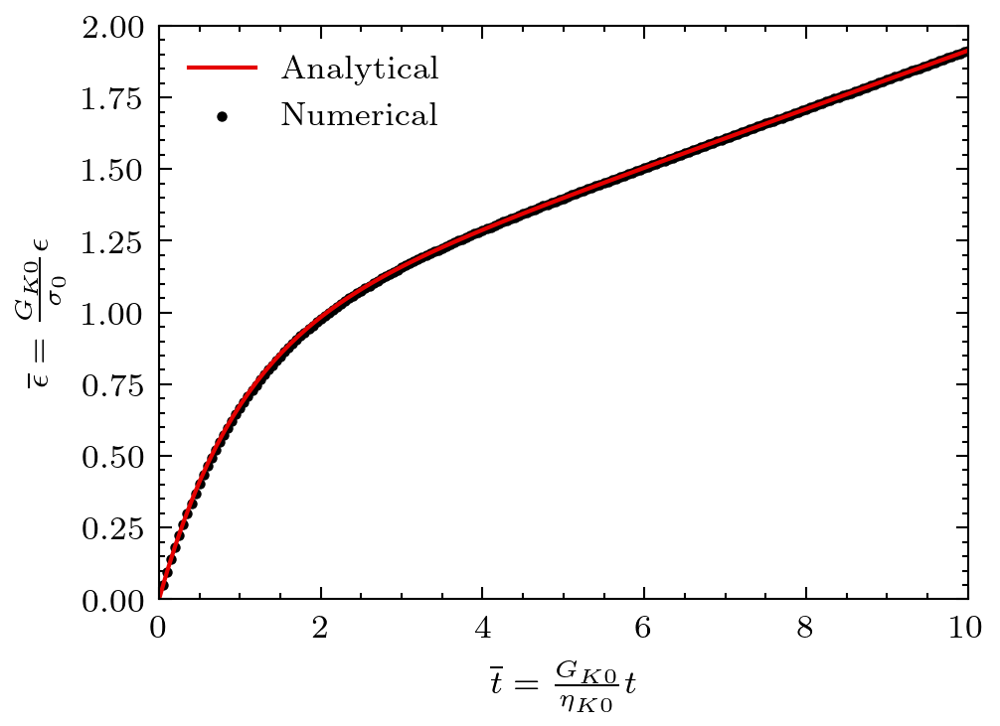

Lubby2's viscoelastic model
This problem considers a squared medium subject to external stress leading to creep. The material deforms following a Lubby2's viscoelastic constitutive model.
Setup
The squared medium is subject to a compressive stress horizontally and tension stress vertically resulting in a deviatoric stress build-up. The setup is sketched in Figure 1.

Figure 1: Setup for the Lubby2's viscoelastic medium.
Solutions
The scalar equivalent creep strain evolution is governed by the following constitutive model:
where and are the Maxwell and Kelvin creep strain defined as:
where is the scalar equivalent creep strain rate and the scalar equivalent stress.
The viscosities and the Kelvin shear modulus of the Lubby2 formulation are functions of the current stress state by means of an exponential dependence on the equivalent deviatoric stress :
The strain solution is given as:
where:
With the following dimensionless quantities: and , the solution can be expressed as:
(1)
Figure 2: Creep strain evolution in a Lubby2's viscoelastic medium.